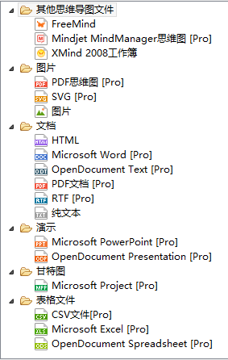
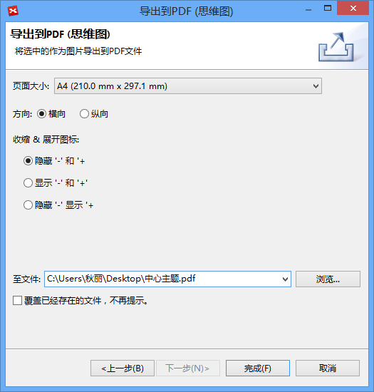
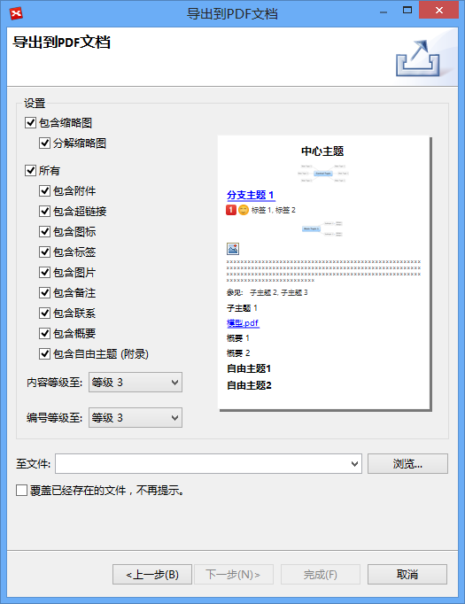
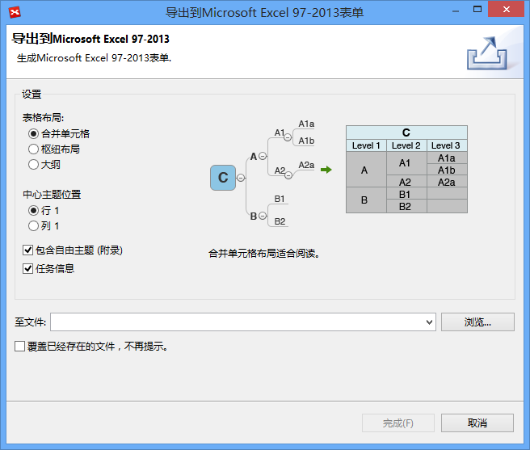
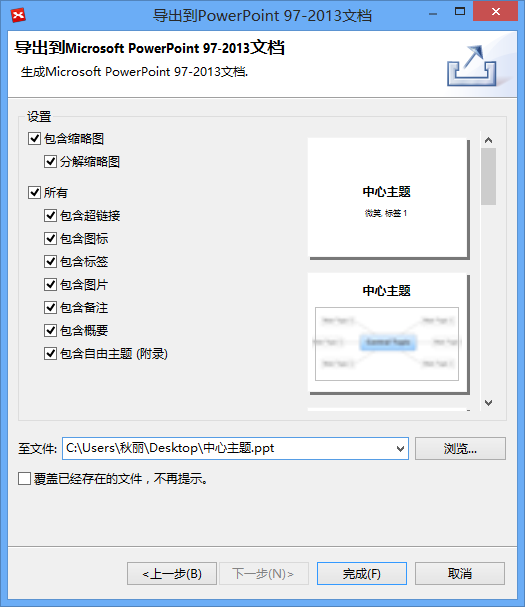

导出
XMind能帮助我们提高我们的工作效率，但是思维图文件可能不是一种十分通用的文件格式。为了更好地和别人分享我们的思维图，我们需要把我们的文件导出了别的文件格式。XMind支持导出到各种不同的文件格式，如PDF, SVG, MS Excel/Word/PPT/Project, MindManager, HTML等等。

导出到PDF（思维图）:- 在菜单栏选择“文件 - 导出”；
- 在导出对话框选择“PDF思维图”并点击“下一步”；
- 点击”浏览“选择保存位置和文件名；
- 修改设置: 页面大小，方向；
- 点击”完成“按钮完成导出。

导出到Mindjet MindManager:- 在菜单栏选择“文件 - 导出”；
- 在导出对话框选择“Mindjet MindManager思维图”并点击“下一步”；
- 点击”浏览“选择保存位置和文件名；
- 点击”完成“按钮完成导出。
- 在菜单栏选择“文件 - 导出”；
- 在导出对话框选择“PDF文档”并点击“下一步”；
- 点击”浏览“选择保存位置和文件名；
- 修改设置: '缩略图', '分解缩略图', '备注', '自由主题', '标签', '图标', '图片', '联系', '超链接'.
- 点击”完成“按钮完成导出。

导出到CSV/Microsoft Excel:- 在菜单栏选择“文件 - 导出”；
- 在导出对话框选择“Microsoft Excel”并点击“下一步”；
- 选择表格布局和导出内容；
- 点击”浏览“选择保存位置和文件名；
- 点击”完成“按钮完成导出。

导出到Microsoft PowerPoint:- 在菜单栏选择“文件 - 导出”；
- 在导出对话框选择“Microsoft PowerPoint”并点击“下一步”；
- 点击”浏览“选择保存位置，文件名和文件格式；
- 修改设置: '缩略图', '分解缩略图', '备注', '自由主题', '标签', '图标', '图片', '联系', '超链接'.
- 点击”完成“按钮完成导出。

导出到Microsoft Project- 在菜单栏选择“文件 - 导出”；
- 在导出对话框选择“Microsoft Project”并点击“下一步”；
- 选择导出内容并设置优先级映射；
- 点击”浏览“选择保存位置和文件名；
- 点击”完成“按钮完成导出。
注意:
- 预览图仅供参。
- 在Windows，Mac和Linux下无需安装Office即可导出到Microsoft Word, PowerPoint, Excel和Project。